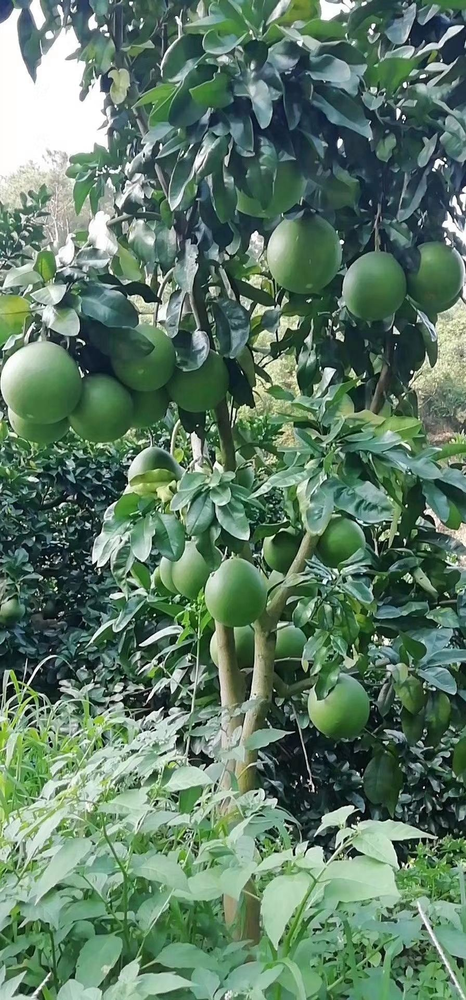
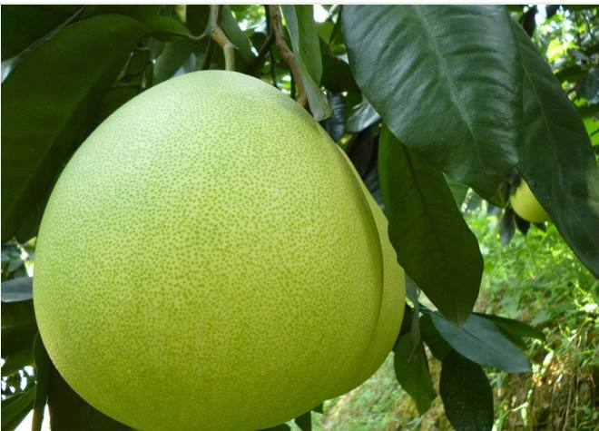
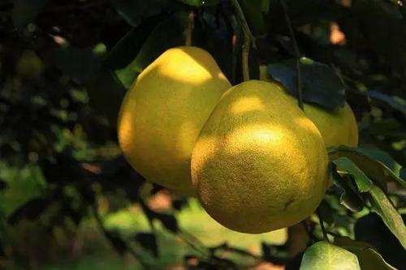

幼年的柚柚
江乡橘柚花如雪，不许离人戴一枝。 ——宋·周文璞《绝句》
盘中多橘柚，未咀齿已酸。 ——宋·梅尧臣《岁日旅泊家人相与为寿》
正在努力成长的小柚
年轻的柚柚
露浴梧楸白，霜催橘柚黄。 ——唐·李白《秋日登扬州西灵塔》
青涩的大柚
成熟的柚柚
鸟行黑点波涛白，枫叶红连橘柚黄。 ——释赞宁《寄题明月禅院》
长开的大柚
江乡橘柚花如雪，不许离人戴一枝。 ——宋·周文璞《绝句》
盘中多橘柚，未咀齿已酸。 ——宋·梅尧臣《岁日旅泊家人相与为寿》
正在努力成长的小柚
露浴梧楸白，霜催橘柚黄。 ——唐·李白《秋日登扬州西灵塔》
青涩的大柚
鸟行黑点波涛白，枫叶红连橘柚黄。 ——释赞宁《寄题明月禅院》
长开的大柚
中环学院
李家济